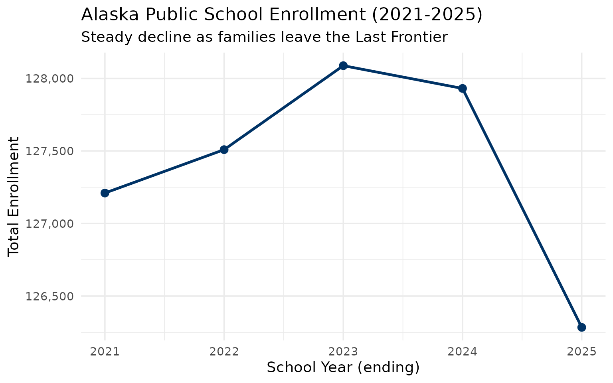
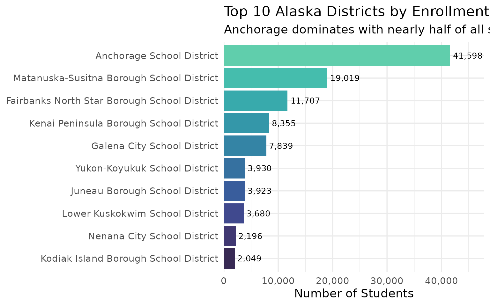
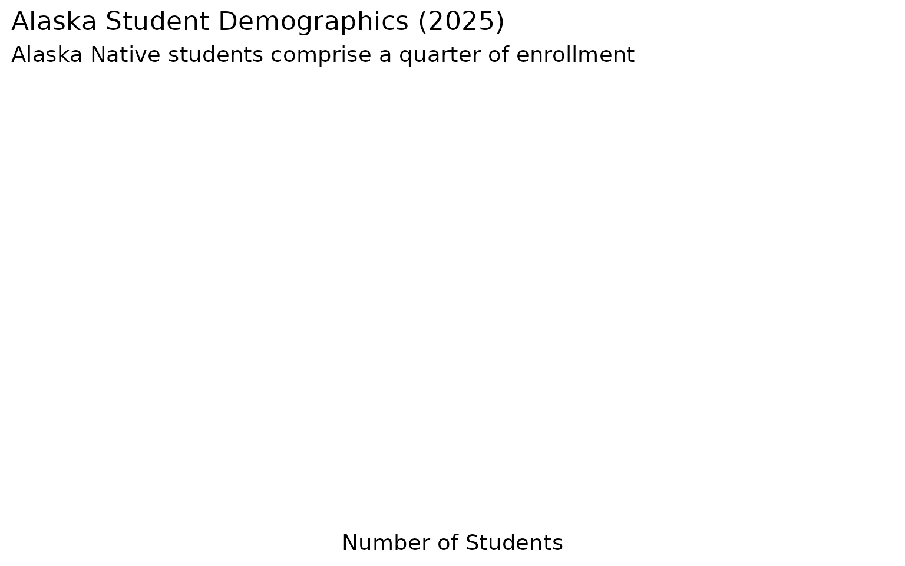
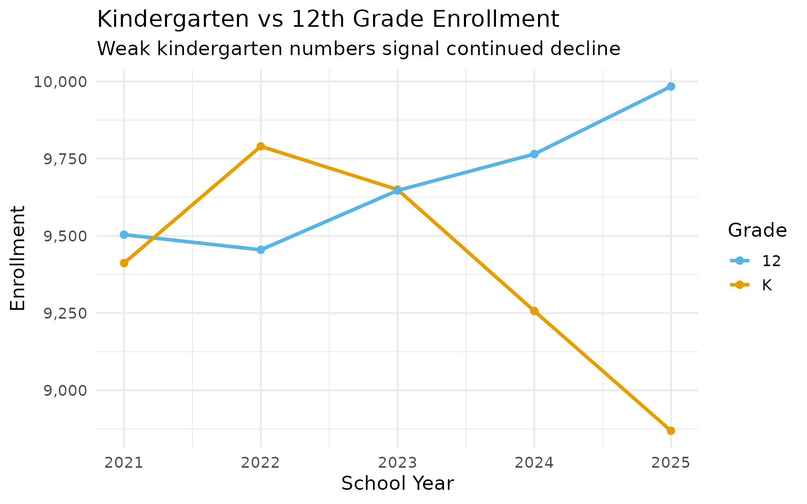
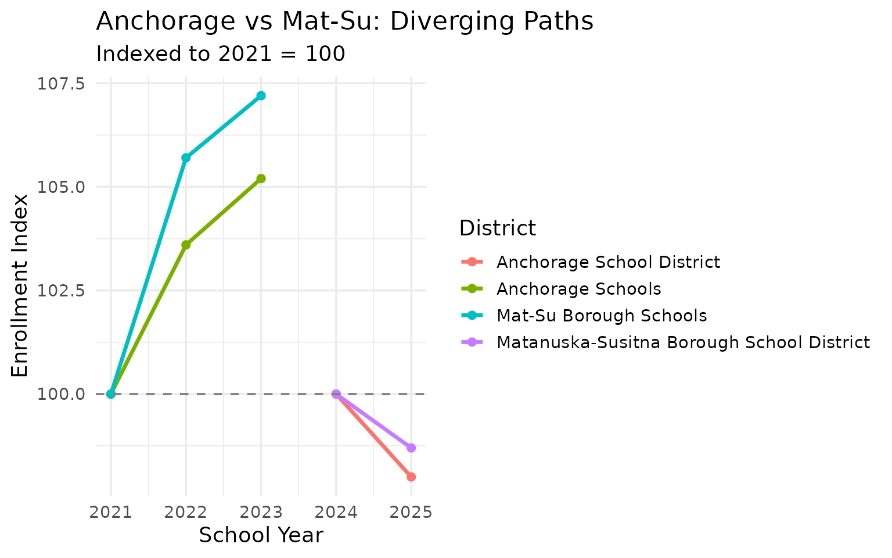
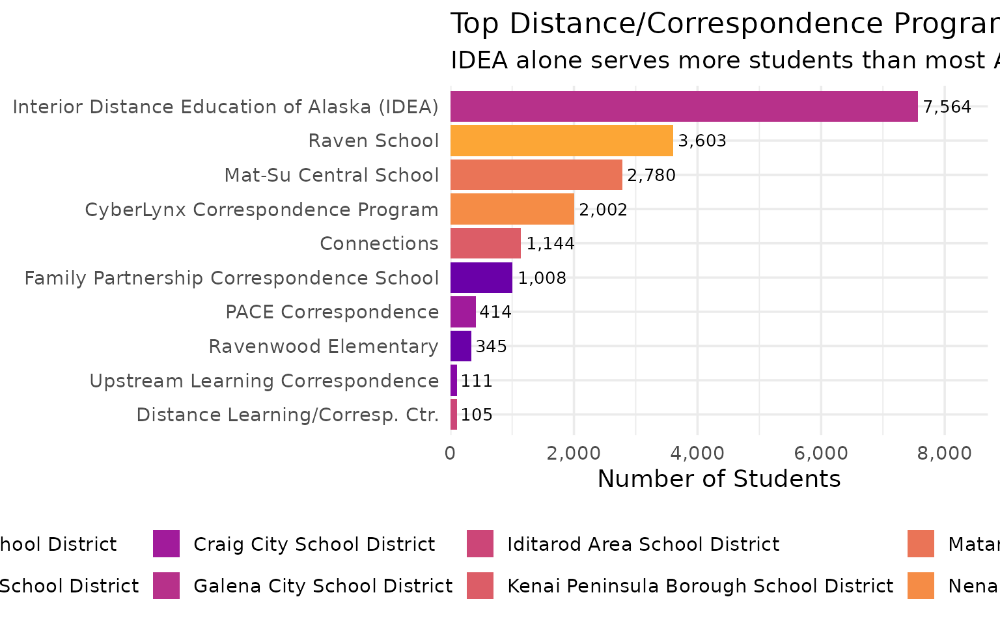
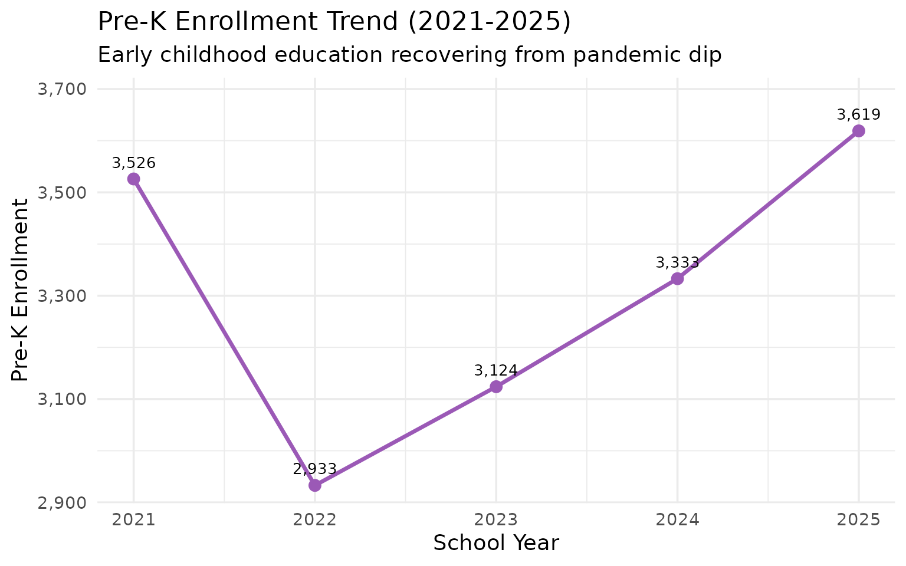
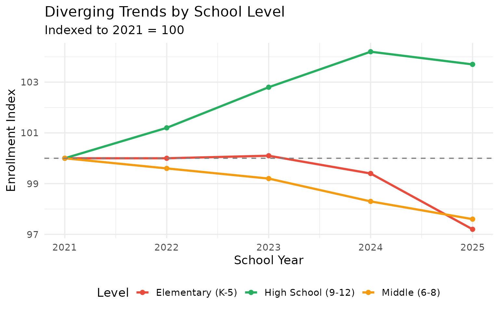
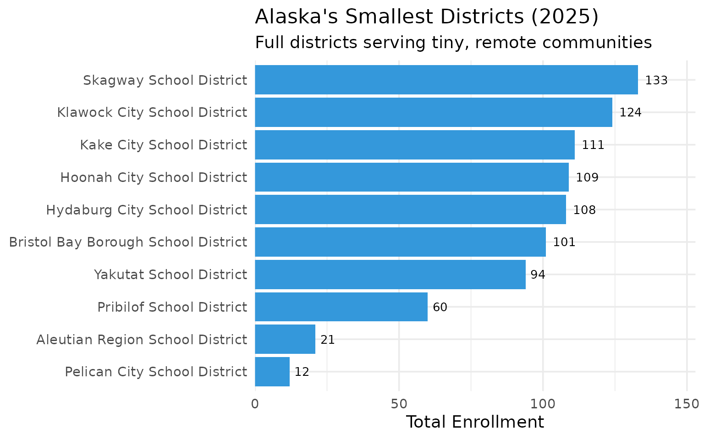
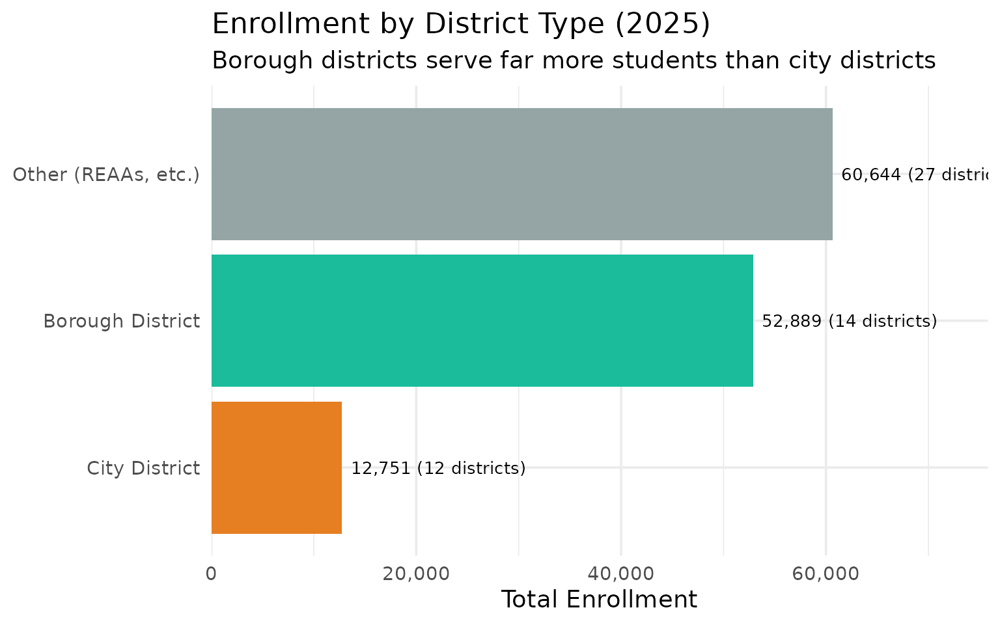

15 Insights from Alaska School Enrollment Data
Source:vignettes/enrollment_hooks.Rmd
enrollment_hooks.Rmd
library(akschooldata)
library(dplyr)
library(tidyr)
library(ggplot2)
theme_set(theme_minimal(base_size = 14))
# Get available year range from package
available <- get_available_years()
min_year <- available$min_year
max_year <- available$max_year
all_years <- min_year:max_yearThis vignette explores Alaska’s public school enrollment data, surfacing key trends and demographic patterns across 5 years of data (2021-2025).
Note: This vignette fetches live data from the Alaska Department
of Education. Run locally with NOT_CRAN=true to see
computed output and charts.
1. Alaska’s enrollment is sliding south
Alaska’s public school enrollment has been in steady decline, dropping from around 132,000 to under 130,000 students in recent years. The Last Frontier is losing families.
enr <- fetch_enr_multi(all_years)
state_totals <- enr |>
filter(is_state, subgroup == "total_enrollment", grade_level == "TOTAL") |>
select(end_year, n_students) |>
mutate(change = n_students - lag(n_students),
pct_change = round(change / lag(n_students) * 100, 2))
state_totals
#> end_year n_students change pct_change
#> 1 2021 127210 NA NA
#> 2 2022 127509 299 0.24
#> 3 2023 128088 579 0.45
#> 4 2024 127931 -157 -0.12
#> 5 2025 126284 -1647 -1.29
ggplot(state_totals, aes(x = end_year, y = n_students)) +
geom_line(linewidth = 1.2, color = "#003366") +
geom_point(size = 3, color = "#003366") +
scale_y_continuous(labels = scales::comma) +
labs(
title = paste0("Alaska Public School Enrollment (", min_year, "-", max_year, ")"),
subtitle = "Steady decline as families leave the Last Frontier",
x = "School Year (ending)",
y = "Total Enrollment"
)
2. Anchorage is half the state
The Anchorage School District educates nearly half of all Alaska students. When Anchorage sneezes, Alaska catches a cold.
enr_latest <- fetch_enr(max_year)
top_districts <- enr_latest |>
filter(is_district, subgroup == "total_enrollment", grade_level == "TOTAL") |>
arrange(desc(n_students)) |>
head(10) |>
select(district_name, n_students)
top_districts
#> district_name n_students
#> 1 Anchorage School District 41598
#> 2 Matanuska-Susitna Borough School District 19019
#> 3 Fairbanks North Star Borough School District 11707
#> 4 Kenai Peninsula Borough School District 8355
#> 5 Galena City School District 7839
#> 6 Yukon-Koyukuk School District 3930
#> 7 Juneau Borough School District 3923
#> 8 Lower Kuskokwim School District 3680
#> 9 Nenana City School District 2196
#> 10 Kodiak Island Borough School District 2049
top_districts |>
mutate(district_name = forcats::fct_reorder(district_name, n_students)) |>
ggplot(aes(x = n_students, y = district_name, fill = district_name)) +
geom_col(show.legend = FALSE) +
geom_text(aes(label = scales::comma(n_students)), hjust = -0.1, size = 3.5) +
scale_x_continuous(labels = scales::comma, expand = expansion(mult = c(0, 0.15))) +
scale_fill_viridis_d(option = "mako", begin = 0.2, end = 0.8) +
labs(
title = paste0("Top 10 Alaska Districts by Enrollment (", max_year, ")"),
subtitle = "Anchorage dominates with nearly half of all students",
x = "Number of Students",
y = NULL
)
3. Post-COVID enrollment shifts
The pandemic’s effects on enrollment continue to ripple through Alaska’s districts. Some areas show signs of recovery while others continue to decline.
# Compare 2021 to 2022
covid_years <- 2021:2022
post_covid_enr <- fetch_enr_multi(covid_years)
covid_changes <- post_covid_enr |>
filter(is_district, subgroup == "total_enrollment", grade_level == "TOTAL",
end_year %in% covid_years) |>
pivot_wider(names_from = end_year, values_from = n_students, names_prefix = "y") |>
mutate(pct_change = round((y2022 / y2021 - 1) * 100, 1)) |>
arrange(pct_change) |>
head(10) |>
select(district_name, y2021, y2022, pct_change)
covid_changes
#> # A tibble: 10 × 4
#> district_name y2021 y2022 pct_change
#> <chr> <dbl> <dbl> <dbl>
#> 1 Hydaburg City Schools 169 127 -24.9
#> 2 Yukon-Koyukuk Schools 4160 3332 -19.9
#> 3 Galena City Schools 9030 7276 -19.4
#> 4 Craig City Schools 874 713 -18.4
#> 5 Tanana Schools 30 26 -13.3
#> 6 Denali Borough Schools 1152 1003 -12.9
#> 7 Yupiit Schools 506 444 -12.3
#> 8 Nenana City Schools 1843 1633 -11.4
#> 9 Bristol Bay Borough Schools 119 106 -10.9
#> 10 Iditarod Area Schools 322 288 -10.64. Alaska Native students are a quarter of enrollment
Alaska Native and American Indian students make up about 22-25% of enrollment statewide–far higher than any other state except Hawaii.
demographics <- enr_latest |>
filter(is_state, grade_level == "TOTAL",
subgroup %in% c("native_american", "white", "asian", "black", "hispanic", "multiracial")) |>
mutate(pct = round(pct * 100, 1)) |>
select(subgroup, n_students, pct) |>
arrange(desc(n_students))
demographics
#> [1] subgroup n_students pct
#> <0 rows> (or 0-length row.names)
demographics |>
mutate(subgroup = forcats::fct_reorder(subgroup, n_students)) |>
ggplot(aes(x = n_students, y = subgroup, fill = subgroup)) +
geom_col(show.legend = FALSE) +
geom_text(aes(label = paste0(pct, "%")), hjust = -0.1) +
scale_x_continuous(labels = scales::comma, expand = expansion(mult = c(0, 0.15))) +
scale_fill_brewer(palette = "Set2") +
labs(
title = paste0("Alaska Student Demographics (", max_year, ")"),
subtitle = "Alaska Native students comprise a quarter of enrollment",
x = "Number of Students",
y = NULL
)
5. Kindergarten predicts the future
Kindergarten enrollment is the canary in the coal mine. Alaska’s K numbers have been weak for years, signaling more decline ahead.
grade_trends <- enr |>
filter(is_state, subgroup == "total_enrollment",
grade_level %in% c("K", "12")) |>
select(end_year, grade_level, n_students) |>
pivot_wider(names_from = grade_level, values_from = n_students)
grade_trends
#> # A tibble: 5 × 3
#> end_year K `12`
#> <int> <dbl> <dbl>
#> 1 2021 9412 9504
#> 2 2022 9790 9455
#> 3 2023 9650 9647
#> 4 2024 9257 9765
#> 5 2025 8869 9984
enr |>
filter(is_state, subgroup == "total_enrollment",
grade_level %in% c("K", "12")) |>
ggplot(aes(x = end_year, y = n_students, color = grade_level)) +
geom_line(linewidth = 1.2) +
geom_point(size = 2) +
scale_y_continuous(labels = scales::comma) +
scale_color_manual(values = c("K" = "#E69F00", "12" = "#56B4E9")) +
labs(
title = "Kindergarten vs 12th Grade Enrollment",
subtitle = "Weak kindergarten numbers signal continued decline",
x = "School Year",
y = "Enrollment",
color = "Grade"
)
6. The Mat-Su Valley bucks the trend
While Anchorage shrinks, the Matanuska-Susitna Borough School District (Palmer/Wasilla area) has been growing, attracting families leaving the big city.
matsu <- enr |>
filter(is_district, subgroup == "total_enrollment", grade_level == "TOTAL",
grepl("Mat-Su|Matanuska", district_name, ignore.case = TRUE)) |>
select(end_year, district_name, n_students)
matsu
#> end_year district_name n_students
#> 1 2021 Mat-Su Borough Schools 17935
#> 2 2022 Mat-Su Borough Schools 18957
#> 3 2023 Mat-Su Borough Schools 19225
#> 4 2024 Matanuska-Susitna Borough School District 19271
#> 5 2025 Matanuska-Susitna Borough School District 19019
enr |>
filter(is_district, subgroup == "total_enrollment", grade_level == "TOTAL",
grepl("Mat-Su|Matanuska|Anchorage", district_name, ignore.case = TRUE)) |>
group_by(district_name) |>
mutate(index = round(n_students / first(n_students) * 100, 1)) |>
ggplot(aes(x = end_year, y = index, color = district_name)) +
geom_line(linewidth = 1.2) +
geom_point(size = 2) +
geom_hline(yintercept = 100, linetype = "dashed", color = "gray50") +
labs(
title = "Anchorage vs Mat-Su: Diverging Paths",
subtitle = paste0("Indexed to ", min_year, " = 100"),
x = "School Year",
y = "Enrollment Index",
color = "District"
)
7. Rural districts are disappearing
Small rural districts with fewer than 100 students face existential challenges. Some haven’t reported enrollment in recent years.
small_districts <- enr_latest |>
filter(is_district, subgroup == "total_enrollment", grade_level == "TOTAL") |>
filter(n_students < 200) |>
arrange(n_students) |>
select(district_name, n_students)
small_districts
#> district_name n_students
#> 1 Pelican City School District 12
#> 2 Aleutian Region School District 21
#> 3 Pribilof School District 60
#> 4 Yakutat School District 94
#> 5 Bristol Bay Borough School District 101
#> 6 Hydaburg City School District 108
#> 7 Hoonah City School District 109
#> 8 Kake City School District 111
#> 9 Klawock City School District 124
#> 10 Skagway School District 133
#> 11 Chatham School District 161
#> 12 Saint Mary's School District 161
#> 13 Aleutians East Borough School District 163
#> 14 Southeast Island School District 164
#> 15 Yukon Flats School District 1718. The graduation pipeline leaks
The gap between 9th grade and 12th grade enrollment reveals retention challenges that vary dramatically by district.
pipeline <- enr_latest |>
filter(is_district, subgroup == "total_enrollment",
grade_level %in% c("09", "12")) |>
pivot_wider(names_from = grade_level, values_from = n_students) |>
mutate(ratio = round(`12` / `09` * 100, 1)) |>
filter(`09` >= 50) |>
arrange(ratio) |>
head(10) |>
select(district_name, `09`, `12`, ratio)
pipeline
#> # A tibble: 10 × 4
#> district_name `09` `12` ratio
#> <chr> <dbl> <dbl> <dbl>
#> 1 Denali Borough School District 81 NA NA
#> 2 Anchorage School District 3189 NA NA
#> 3 Bering Strait School District 140 NA NA
#> 4 Delta/Greely School District 85 NA NA
#> 5 Fairbanks North Star Borough School District 846 NA NA
#> 6 Galena City School District 597 NA NA
#> 7 Juneau Borough School District 298 NA NA
#> 8 Kenai Peninsula Borough School District 673 NA NA
#> 9 Ketchikan Gateway Borough School District 169 NA NA
#> 10 Kodiak Island Borough School District 172 NA NA9. Fairbanks is shrinking faster than Anchorage
Fairbanks North Star Borough School District has seen steeper percentage declines than Anchorage in recent years. The interior is emptying out.
major_districts <- enr |>
filter(is_district, subgroup == "total_enrollment", grade_level == "TOTAL",
grepl("Fairbanks|Anchorage", district_name)) |>
mutate(district_simple = case_when(
grepl("Anchorage", district_name) ~ "Anchorage",
grepl("Fairbanks", district_name) ~ "Fairbanks",
TRUE ~ district_name
)) |>
group_by(district_simple) |>
mutate(index = round(n_students / first(n_students) * 100, 1)) |>
select(end_year, district_simple, n_students, index)
major_districts
#> # A tibble: 10 × 4
#> # Groups: district_simple [2]
#> end_year district_simple n_students index
#> <int> <chr> <dbl> <dbl>
#> 1 2021 Anchorage 41203 100
#> 2 2021 Fairbanks 11199 100
#> 3 2022 Anchorage 42701 104.
#> 4 2022 Fairbanks 12199 109.
#> 5 2023 Anchorage 43325 105.
#> 6 2023 Fairbanks 12568 112.
#> 7 2024 Anchorage 42431 103
#> 8 2024 Fairbanks 12365 110.
#> 9 2025 Anchorage 41598 101
#> 10 2025 Fairbanks 11707 104.
enr |>
filter(is_district, subgroup == "total_enrollment", grade_level == "TOTAL",
grepl("Fairbanks|Anchorage", district_name)) |>
mutate(district_simple = case_when(
grepl("Anchorage", district_name) ~ "Anchorage",
grepl("Fairbanks", district_name) ~ "Fairbanks",
TRUE ~ district_name
)) |>
group_by(district_simple) |>
mutate(index = round(n_students / first(n_students) * 100, 1)) |>
ggplot(aes(x = end_year, y = index, color = district_simple)) +
geom_line(linewidth = 1.2) +
geom_point(size = 2) +
geom_hline(yintercept = 100, linetype = "dashed", color = "gray50") +
scale_color_manual(values = c("Anchorage" = "#003366", "Fairbanks" = "#CC5500")) +
labs(
title = "Fairbanks vs Anchorage: Who's Shrinking Faster?",
subtitle = paste0("Indexed to ", min_year, " = 100"),
x = "School Year",
y = "Enrollment Index",
color = "District"
)
10. Alaska’s geography creates unique schools
Some Alaska schools are only accessible by plane or boat. These remote schools serve communities of fewer than 50 students across areas larger than some states.
smallest <- enr_latest |>
filter(is_district, subgroup == "total_enrollment", grade_level == "TOTAL") |>
arrange(n_students) |>
head(10) |>
select(district_name, n_students)
smallest
#> district_name n_students
#> 1 Pelican City School District 12
#> 2 Aleutian Region School District 21
#> 3 Pribilof School District 60
#> 4 Yakutat School District 94
#> 5 Bristol Bay Borough School District 101
#> 6 Hydaburg City School District 108
#> 7 Hoonah City School District 109
#> 8 Kake City School District 111
#> 9 Klawock City School District 124
#> 10 Skagway School District 13311. Distance education is Alaska’s secret
Alaska pioneered distance education out of necessity. Schools like IDEA (Interior Distance Education of Alaska) now serve more students than most districts, with families across the state enrolled in correspondence programs.
distance_schools <- enr_latest |>
filter(is_campus, subgroup == "total_enrollment", grade_level == "TOTAL") |>
filter(grepl("IDEA|Correspondence|Distance|Central School|Raven|Cyber|Connections", campus_name, ignore.case = TRUE)) |>
arrange(desc(n_students)) |>
head(10) |>
select(district_name, campus_name, n_students)
distance_schools
#> district_name
#> 1 Galena City School District
#> 2 Yukon-Koyukuk School District
#> 3 Matanuska-Susitna Borough School District
#> 4 Nenana City School District
#> 5 Kenai Peninsula Borough School District
#> 6 Anchorage School District
#> 7 Craig City School District
#> 8 Anchorage School District
#> 9 Copper River School District
#> 10 Iditarod Area School District
#> campus_name n_students
#> 1 Interior Distance Education of Alaska (IDEA) 7564
#> 2 Raven School 3603
#> 3 Mat-Su Central School 2780
#> 4 CyberLynx Correspondence Program 2002
#> 5 Connections 1144
#> 6 Family Partnership Correspondence School 1008
#> 7 PACE Correspondence 414
#> 8 Ravenwood Elementary 345
#> 9 Upstream Learning Correspondence 111
#> 10 Distance Learning/Corresp. Ctr. 105
distance_schools |>
mutate(campus_name = forcats::fct_reorder(campus_name, n_students)) |>
ggplot(aes(x = n_students, y = campus_name, fill = district_name)) +
geom_col() +
geom_text(aes(label = scales::comma(n_students)), hjust = -0.1, size = 3.5) +
scale_x_continuous(labels = scales::comma, expand = expansion(mult = c(0, 0.15))) +
scale_fill_viridis_d(option = "plasma", begin = 0.2, end = 0.8) +
labs(
title = paste0("Top Distance/Correspondence Programs (", max_year, ")"),
subtitle = "IDEA alone serves more students than most Alaska districts",
x = "Number of Students",
y = NULL,
fill = "District"
) +
theme(legend.position = "bottom")
12. Pre-K is bouncing back
Pre-Kindergarten enrollment took a hit during the pandemic but has been recovering steadily. Early childhood education is making a comeback in the Last Frontier.
prek_trend <- enr |>
filter(is_state, subgroup == "total_enrollment", grade_level == "PK") |>
select(end_year, n_students) |>
mutate(change = n_students - lag(n_students),
pct_change = round(change / lag(n_students) * 100, 1))
prek_trend
#> end_year n_students change pct_change
#> 1 2021 3526 NA NA
#> 2 2022 2933 -593 -16.8
#> 3 2023 3124 191 6.5
#> 4 2024 3333 209 6.7
#> 5 2025 3619 286 8.6
ggplot(prek_trend, aes(x = end_year, y = n_students)) +
geom_line(linewidth = 1.2, color = "#9B59B6") +
geom_point(size = 3, color = "#9B59B6") +
geom_text(aes(label = scales::comma(n_students)), vjust = -1, size = 3.5) +
scale_y_continuous(labels = scales::comma, expand = expansion(mult = c(0.05, 0.15))) +
labs(
title = paste0("Pre-K Enrollment Trend (", min_year, "-", max_year, ")"),
subtitle = "Early childhood education recovering from pandemic dip",
x = "School Year",
y = "Pre-K Enrollment"
)
13. Elementary shrinks while high school grows
A tale of two pipelines: Elementary enrollment (K-5) is declining while high school (9-12) continues to grow. This reflects both demographic shifts and the echo of larger cohorts moving through the system.
level_trends <- enr |>
filter(is_state, subgroup == "total_enrollment") |>
mutate(level = case_when(
grade_level %in% c("K", "01", "02", "03", "04", "05") ~ "Elementary (K-5)",
grade_level %in% c("06", "07", "08") ~ "Middle (6-8)",
grade_level %in% c("09", "10", "11", "12") ~ "High School (9-12)",
TRUE ~ NA_character_
)) |>
filter(!is.na(level)) |>
group_by(end_year, level) |>
summarize(n_students = sum(n_students), .groups = "drop")
level_trends
#> # A tibble: 15 × 3
#> end_year level n_students
#> <int> <chr> <dbl>
#> 1 2021 Elementary (K-5) 58923
#> 2 2021 High School (9-12) 38168
#> 3 2021 Middle (6-8) 30119
#> 4 2022 Elementary (K-5) 58895
#> 5 2022 High School (9-12) 38615
#> 6 2022 Middle (6-8) 29999
#> 7 2023 Elementary (K-5) 59000
#> 8 2023 High School (9-12) 39219
#> 9 2023 Middle (6-8) 29869
#> 10 2024 Elementary (K-5) 58554
#> 11 2024 High School (9-12) 39776
#> 12 2024 Middle (6-8) 29601
#> 13 2025 Elementary (K-5) 57282
#> 14 2025 High School (9-12) 39598
#> 15 2025 Middle (6-8) 29404
level_trends |>
group_by(level) |>
mutate(index = round(n_students / first(n_students) * 100, 1)) |>
ggplot(aes(x = end_year, y = index, color = level)) +
geom_line(linewidth = 1.2) +
geom_point(size = 2) +
geom_hline(yintercept = 100, linetype = "dashed", color = "gray50") +
scale_color_manual(values = c("Elementary (K-5)" = "#E74C3C", "Middle (6-8)" = "#F39C12", "High School (9-12)" = "#27AE60")) +
labs(
title = "Diverging Trends by School Level",
subtitle = paste0("Indexed to ", min_year, " = 100"),
x = "School Year",
y = "Enrollment Index",
color = "Level"
) +
theme(legend.position = "bottom")
14. Twelve students, one district
Pelican City School District serves just 12 students–but under Alaska law, it still operates as a full district. These micro-districts reflect Alaska’s commitment to educating even the most remote communities.
micro_districts <- enr_latest |>
filter(is_district, subgroup == "total_enrollment", grade_level == "TOTAL") |>
filter(n_students < 150) |>
arrange(n_students) |>
select(district_name, n_students) |>
head(10)
micro_districts
#> district_name n_students
#> 1 Pelican City School District 12
#> 2 Aleutian Region School District 21
#> 3 Pribilof School District 60
#> 4 Yakutat School District 94
#> 5 Bristol Bay Borough School District 101
#> 6 Hydaburg City School District 108
#> 7 Hoonah City School District 109
#> 8 Kake City School District 111
#> 9 Klawock City School District 124
#> 10 Skagway School District 133
micro_districts |>
mutate(district_name = forcats::fct_reorder(district_name, n_students)) |>
ggplot(aes(x = n_students, y = district_name)) +
geom_col(fill = "#3498DB") +
geom_text(aes(label = n_students), hjust = -0.3, size = 3.5) +
scale_x_continuous(expand = expansion(mult = c(0, 0.15))) +
labs(
title = paste0("Alaska's Smallest Districts (", max_year, ")"),
subtitle = "Full districts serving tiny, remote communities",
x = "Total Enrollment",
y = NULL
)
15. Borough districts dominate
Alaska’s borough school districts (regional governments) serve far more students than city districts. The 14 borough districts enroll nearly 53,000 students, while 12 city districts serve just 12,000.
dist_types <- enr_latest |>
filter(is_district, subgroup == "total_enrollment", grade_level == "TOTAL") |>
mutate(dist_type = case_when(
grepl("Borough", district_name) ~ "Borough District",
grepl("City", district_name) ~ "City District",
TRUE ~ "Other (REAAs, etc.)"
)) |>
group_by(dist_type) |>
summarize(
n_districts = n(),
total_students = sum(n_students),
.groups = "drop"
) |>
mutate(avg_students = round(total_students / n_districts))
dist_types
#> # A tibble: 3 × 4
#> dist_type n_districts total_students avg_students
#> <chr> <int> <dbl> <dbl>
#> 1 Borough District 14 52889 3778
#> 2 City District 12 12751 1063
#> 3 Other (REAAs, etc.) 27 60644 2246
dist_types |>
mutate(dist_type = forcats::fct_reorder(dist_type, total_students)) |>
ggplot(aes(x = total_students, y = dist_type, fill = dist_type)) +
geom_col(show.legend = FALSE) +
geom_text(aes(label = paste0(scales::comma(total_students), " (", n_districts, " districts)")),
hjust = -0.05, size = 3.5) +
scale_x_continuous(labels = scales::comma, expand = expansion(mult = c(0, 0.25))) +
scale_fill_manual(values = c("Borough District" = "#1ABC9C", "City District" = "#E67E22", "Other (REAAs, etc.)" = "#95A5A6")) +
labs(
title = paste0("Enrollment by District Type (", max_year, ")"),
subtitle = "Borough districts serve far more students than city districts",
x = "Total Enrollment",
y = NULL
)
Summary
Alaska’s school enrollment data reveals:
- Steady decline: The Last Frontier is losing students year over year
- Anchorage dominance: One district educates nearly half the state
- Distance education boom: Correspondence programs serve thousands statewide
- Urban-suburban shift: Mat-Su grows while Anchorage and Fairbanks shrink
- Rural resilience: Tiny bush districts persist against long odds
- Early childhood recovery: Pre-K bouncing back from pandemic lows
- Pipeline divergence: Elementary shrinks while high school grows
These patterns shape school funding debates and facility planning across America’s largest and most remote state.
Data sourced from the Alaska Department of Education and Early Development Data Center.
sessionInfo()
#> R version 4.5.2 (2025-10-31)
#> Platform: x86_64-pc-linux-gnu
#> Running under: Ubuntu 24.04.3 LTS
#>
#> Matrix products: default
#> BLAS: /usr/lib/x86_64-linux-gnu/openblas-pthread/libblas.so.3
#> LAPACK: /usr/lib/x86_64-linux-gnu/openblas-pthread/libopenblasp-r0.3.26.so; LAPACK version 3.12.0
#>
#> locale:
#> [1] LC_CTYPE=C.UTF-8 LC_NUMERIC=C LC_TIME=C.UTF-8
#> [4] LC_COLLATE=C.UTF-8 LC_MONETARY=C.UTF-8 LC_MESSAGES=C.UTF-8
#> [7] LC_PAPER=C.UTF-8 LC_NAME=C LC_ADDRESS=C
#> [10] LC_TELEPHONE=C LC_MEASUREMENT=C.UTF-8 LC_IDENTIFICATION=C
#>
#> time zone: UTC
#> tzcode source: system (glibc)
#>
#> attached base packages:
#> [1] stats graphics grDevices utils datasets methods base
#>
#> other attached packages:
#> [1] ggplot2_4.0.1 tidyr_1.3.2 dplyr_1.1.4 akschooldata_0.2.0
#>
#> loaded via a namespace (and not attached):
#> [1] gtable_0.3.6 jsonlite_2.0.0 compiler_4.5.2 tidyselect_1.2.1
#> [5] jquerylib_0.1.4 systemfonts_1.3.1 scales_1.4.0 textshaping_1.0.4
#> [9] readxl_1.4.5 yaml_2.3.12 fastmap_1.2.0 R6_2.6.1
#> [13] labeling_0.4.3 generics_0.1.4 curl_7.0.0 knitr_1.51
#> [17] forcats_1.0.1 tibble_3.3.1 desc_1.4.3 bslib_0.9.0
#> [21] pillar_1.11.1 RColorBrewer_1.1-3 rlang_1.1.7 utf8_1.2.6
#> [25] cachem_1.1.0 xfun_0.56 fs_1.6.6 sass_0.4.10
#> [29] S7_0.2.1 viridisLite_0.4.2 cli_3.6.5 withr_3.0.2
#> [33] pkgdown_2.2.0 magrittr_2.0.4 digest_0.6.39 grid_4.5.2
#> [37] rappdirs_0.3.4 lifecycle_1.0.5 vctrs_0.7.0 evaluate_1.0.5
#> [41] glue_1.8.0 cellranger_1.1.0 farver_2.1.2 codetools_0.2-20
#> [45] ragg_1.5.0 httr_1.4.7 rmarkdown_2.30 purrr_1.2.1
#> [49] tools_4.5.2 pkgconfig_2.0.3 htmltools_0.5.9